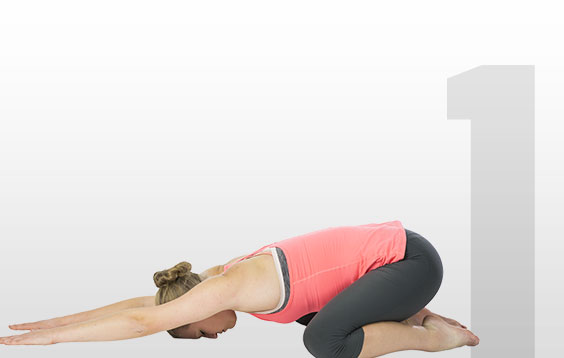
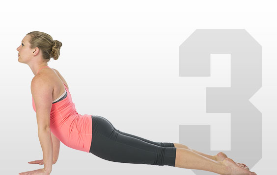

Yoga for everyone
What is Yoga?
It’s time to roll out your yoga mat and discover the combination
of physical and mental exercises that for thousands of years have
hooked yoga practitioners around the globe. The beauty of yoga is that
you don’t have to be a yogi or yogini to reap the benefits. Whether you
are young or old, overweight or fit, yoga has the power to calm the mind
and strengthen the body. Don’t be intimidated by yoga terminology, fancy
yoga studios and complicated poses. Yoga is for everyone.
Anceint, But not Foreign
Yoga is tied to ancient Indian philosophy, so yoga poses have both
Sanskrit and English names — adho mukha svanasana is more commonly known
as downward-facing dog, for example — and you may hear both in a class.
Trainers and fitness classes around the world, not to mention college and
professional sports teams, are including yoga into more traditional workouts
as a potent form of mind-body conditioning, helping athletes to breathe better
and increase their focus.
Basic Yoga Poses
 